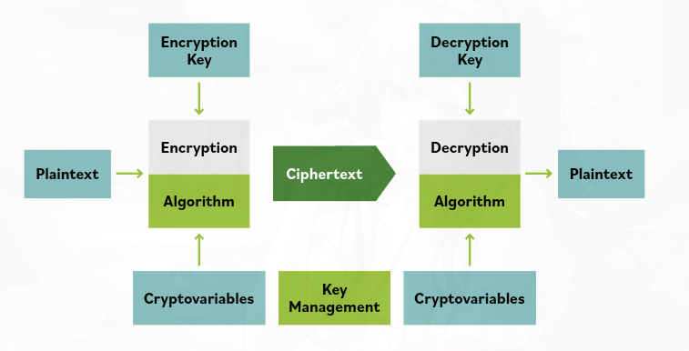

3. Encryption Overview
Encryption (method of converting readable data into unreadable form to protect it) is widely used in modern digital systems. It protects personal information, financial transactions, and communications. Encryption is part of cryptography (science of protecting information using mathematical techniques).
Basic Encryption Idea
Encryption transforms:
- Plaintext (original readable data before encryption)
→ into - Ciphertext (scrambled unreadable data after encryption)
Only someone with the decryption key (secret value used to unlock encrypted data) can convert the ciphertext back to readable data.
Security Goals of Encryption
Confidentiality
Confidentiality (keeping information secret from unauthorized people)
Encryption hides data so only the intended recipient can read it.
Integrity
Integrity (ensuring data has not been changed or tampered with)
Techniques like hash functions (mathematical functions that create a unique fingerprint of data) and digital signatures (cryptographic proof of the sender’s identity and data authenticity) help verify that data was not modified.
Encryption System
An encryption system (complete setup used to encrypt and decrypt data) includes:
- Hardware (physical devices used for encryption)
- Software (programs performing encryption operations)
- Algorithms (mathematical procedures used to encrypt data)
- Control parameters (settings and keys used in encryption)
Together they protect information during storage and transmission.
Plaintext
Plaintext (data in its normal readable form before encryption) can include:
- Text data (documents, emails, messages)
- Images, audio, or video files (media content)
- Database records (stored information inside databases)
- Any digital data (anything a computer can store or process)
Even if the data is not easily readable by humans, it is still considered plaintext before encryption.

Main Idea:
Encryption protects information by turning readable data (plaintext) into unreadable data (ciphertext) so that only authorized users can access it, while also ensuring confidentiality and integrity of the data.